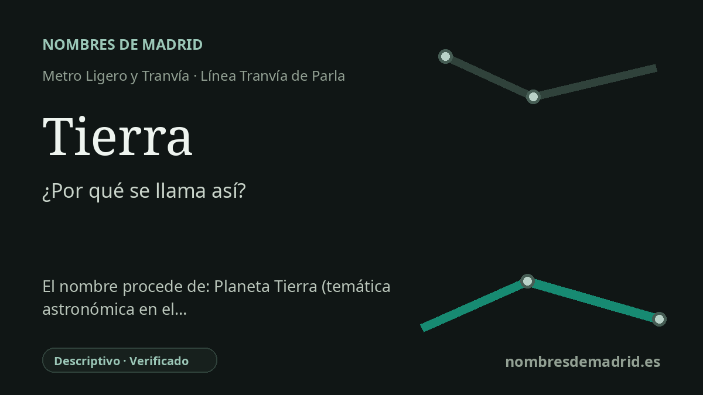

Publicado el · Investigación de Nombres de Madrid · Cómo verificamos cada origen · 8 fuentes consultadas
Respuesta rápida
Tierra toma su nombre de la calle Planeta Tierra, en Parla Este. La parada forma parte de un barrio moderno cuyo callejero recurre de forma amplia a planetas, estrellas, constelaciones, signos del zodiaco, galaxias y el sistema solar.
La historia del nombre
Tierra toma su nombre de la calle Planeta Tierra, la vía que da a este punto de Parla Este su referencia astronómica inmediata. El Consorcio Regional de Transportes registra la parada como dos andenes de tranvía, Tierra Norte y Tierra Sur, situados respectivamente en la avenida de las Estrellas y en la avenida de los Planetas, dentro de la trama de planetas y estrellas del barrio.
No se trata de un topónimo rural antiguo ni de una dedicatoria conmemorativa a una persona. El nombre forma parte de un sistema moderno de denominación municipal en el que muchas calles de Parla Este se organizan en torno a la astronomía: Planeta Mercurio, Planeta Venus, Planeta Marte, Planeta Júpiter, Planeta Saturno, Planeta Urano y Planeta Neptuno aparecen junto a la calle Planeta Tierra. En el entorno también figuran estrellas como Sirio, Vega, Altair, Antares y Polar, y constelaciones como Orión, Andrómeda, Pegaso, Casiopea, Osa Mayor y Osa Menor.
Ese callejero pertenece a la expansión oriental moderna de Parla. Un anuncio del BOE de 2001 ya menciona las obras de urbanización del Plan Parcial ámbito 4 bis, Residencial Este de Parla, y fuentes posteriores de transporte describen la segunda fase del tranvía como la conexión entre la ciudad consolidada y el nuevo barrio de Parla Este. En ese contexto, Tierra es un nombre de transporte heredado del trazado viario planificado, no una denominación aislada de la estación.
La parada también muestra cómo el tranvía se integró en las grandes avenidas de Parla Este. Las páginas actuales del CRTM sitúan Tierra Norte en la avenida de las Estrellas y Tierra Sur en la avenida de los Planetas, mientras que el inventario municipal de vías identifica la calle Planeta Tierra dentro de Residencial Este. Por eso conviene describirla como una parada dual nombrada por la calle a la que sirve, más que como una simple alusión simbólica a la Tierra.
La documentación respalda con fuerza el origen del nombre. La idea de que Tierra ocupa la tercera posición orbital, como el planeta Tierra en el sistema solar, es sugerente, pero no consta una fuente oficial que indique que las paradas o las calles se ordenaran deliberadamente de ese modo. La parada toma su nombre de la calle Planeta Tierra, dentro de la nomenclatura astronómica de Parla Este.